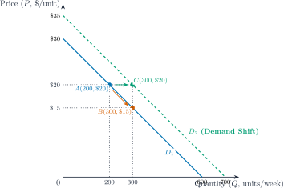
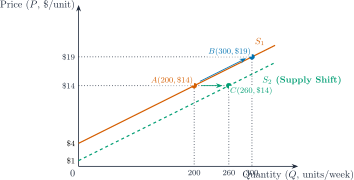
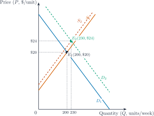
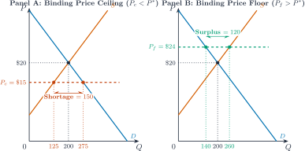

3 Chapter 3: Supply, Demand, and Market Equilibrium
This chapter develops the competitive supply-and-demand model for single-product markets. By deriving linear demand and supply schedules from underlying consumer valuation and marginal opportunity cost, we distinguish movements along fixed curves from shifts of entire curves, solve algebraically and geometrically for market-clearing equilibrium (\(P^*, Q^*\)), evaluate simultaneous dual-shock comparative statics, and analyze the market shortages and surpluses caused by binding price ceilings and price floors. Throughout this chapter, single-market nominal prices (\(P\)) are kept strictly distinct from economy-wide aggregate price indexes covered in Chapter 5.
Learning Outcomes and Key Terms
Upon completing this chapter, students should be able to:
- Distinguish a movement along a demand or supply curve (caused by a change in the good’s own price) from a shift of the entire curve (caused by non-price determinants).
- Solve linear demand and supply equations for market-clearing equilibrium price and quantity (\(P^*, Q^*\)) and verify disequilibrium surpluses or shortages at non-clearing prices.
- Predict how single shocks and simultaneous dual shocks to demand and supply alter equilibrium price and quantity, identifying when one outcome is indeterminate.
- Evaluate the effects of binding versus non-binding price ceilings and price floors on quantities traded, shortages, and surpluses.
Key Terms: competitive market, Law of Demand, quantity demanded, demand curve, substitution effect, income effect, normal good, inferior good, substitutes, complements, Law of Supply, quantity supplied, supply curve, market equilibrium (\(P^*, Q^*\)), surplus, shortage, price ceiling, price floor, relative price.
In Chapter 3, \(P\) denotes the market-determined nominal price of a single good or service (such as a pound of roasted coffee, a gallon of gasoline, or a one-bedroom apartment lease). It is not the economy-wide aggregate price level, which is a unitless index measuring overall price changes across a representative basket of thousands of goods and services (covered in Chapter 5: Inflation and Deflation).
When avian flu outbreaks swept U.S. poultry farms, retail egg prices surged within weeks—and then gradually fell back as flocks recovered and grocery shelves remained stocked. By contrast, in cities with strict municipal rent-control ordinances capping monthly apartment rents below market-clearing levels, listed rents stayed low on paper while thousands of prospective tenants faced multi-year waitlists and unreturned applications. Both outcomes obey the same supply-and-demand mechanics: flexible prices eliminate shortages by rationing scarce supply, whereas legal price caps block price adjustment and turn scarcity into persistent queues.
3.1 Demand and Consumer Valuation
Conceptual Introduction
A competitive market brings together many buyers and sellers of a standardized good or service so that no single buyer or seller can dictate the market price. On the buyer side, quantity demanded (\(Q_d\)) is the total amount of a good that consumers are willing and able to purchase at a specific price during a given period, holding all other factors constant (ceteris paribus). The Law of Demand states that, ceteris paribus, there is an inverse relationship between a good’s own price and its quantity demanded: when the price rises, quantity demanded falls; when the price falls, quantity demanded rises.
Two behavioral mechanisms explain why demand curves slope downward. First, the substitution effect occurs because a higher own price makes the good more expensive relative to alternative goods, prompting buyers to switch toward cheaper substitutes. Second, the income effect occurs because a higher price erodes the purchasing power of a household’s fixed nominal income, reducing the quantity of goods it can afford to buy. Together, these forces ensure that lower prices attract new buyers and induce existing buyers to purchase more units.
Crucially, economists separate two visually distinct changes on a demand diagram. A change in the good’s own price causes a movement along a fixed demand curve—termed a change in quantity demanded. By contrast, a change in any non-price determinant alters the quantity buyers want at every possible price, producing a horizontal shift of the entire demand curve—termed a change in demand. The five primary non-price demand shifters are:
- Consumer Income: Higher income shifts demand rightward for normal goods (such as restaurant dining or airline travel) and leftward for inferior goods (such as instant noodles or intercity bus tickets).
- Prices of Related Goods: A price hike for a substitute (e.g., tea) shifts demand for the primary good (e.g., coffee) rightward; a price hike for a complement (e.g., espresso machines) shifts coffee demand leftward.
- Tastes and Preferences: Changes in health findings, seasonal habits, or cultural trends shift demand at every price.
- Buyer Expectations: Anticipating higher future prices or tighter future availability accelerates current buying, shifting current demand rightward.
- Market Size (Number of Buyers): Population growth or demographic expansion scales up total market quantity demanded at each price.
A common exam error is stating that a rise in a good’s own price ``shifts demand left.’’ A change in own price never shifts the demand curve; it causes a movement along a fixed demand curve (a decrease in quantity demanded). Only a change in a non-price determinant (income, related-good prices, tastes, expectations, or number of buyers) shifts the entire demand curve.
Visual Representation
Figure 1 contrasts a movement along the initial demand curve \(D_1\) (from point \(A\) to point \(B\) when own price falls from \(\$20\) to \(\$15\)) against a rightward shift of the entire demand curve from \(D_1\) to \(D_2\) (from point \(A\) to point \(C\) when higher household income raises quantity demanded at the unchanged price of \(\$20\)).

Real-World Application
When a major video-streaming platform raises its ad-free monthly subscription price from \(\$15\) to \(\$20\), existing subscribers cut back or downgrade tiers—a classic upward movement along the platform’s demand curve. However, when rival platforms simultaneously launch lower-priced ad-supported bundles or live sports packages, the primary platform experiences a leftward shift of its demand curve: even if it holds its price steady at \(\$20\), fewer households subscribe because the price of close substitutes has fallen.
Mathematical Foundation
Under a linear demand specification, direct demand expresses quantity demanded as a function of price (\(Q_d = a - bP\), where \(a > 0\) is the horizontal intercept and \(-b < 0\) is the responsiveness of quantity to price). Because economists plot price on the vertical axis and quantity on the horizontal axis, solving for \(P\) yields the inverse demand equation:
\[ Q_d = a - bP \iff P = \frac{a}{b} - \frac{1}{b}Q_d \]
where \(\frac{a}{b}\) is the choke price (the vertical intercept at which \(Q_d = 0\)) and \(-\frac{1}{b}\) is the visual slope of the plotted demand line.
Suppose a local specialty coffee market consists of two identical consumer groups, each with individual demand \(q_d = 300 - 10P\) (in bags per week).
- Step 1 — Aggregate Market Demand (\(Q_d\)): Sum quantities across both groups at each price \(P\): \[Q_d = q_{d,1} + q_{d,2} = (300 - 10P) + (300 - 10P) = 600 - 20P.\]
- Step 2 — Inverse Demand & Choke Price: Rearrange \(Q_d = 600 - 20P\) to isolate \(P\): \[20P = 600 - Q_d \implies P = \frac{600}{20} - \frac{1}{20}Q_d = 30 - 0.05Q_d.\] Setting \(Q_d = 0\) gives a choke price of \(P = \$30\) per bag.
- Step 3 — Movement Along \(D_1\) vs. Shift to \(D_2\): At \(P = \$20\), initial quantity demanded is \(Q_d = 600 - 20(20) = 200\) bags (Point \(A\)). If price falls to \(P = \$15\), quantity demanded moves along \(D_1\) to \(Q_d = 600 - 20(15) = 300\) bags (Point \(B\)). If higher consumer income increases demand by \(100\) bags at every price, the new demand curve is \(Q_d' = 700 - 20P \iff P = 35 - 0.05Q_d'\), raising quantity demanded at \(P = \$20\) to \(Q_d' = 700 - 20(20) = 300\) bags (Point \(C\)).
For general differentiable demand \(Q_d = D(P, I, P_y)\), holding income \(I\) and related-good prices \(P_y\) constant isolates the partial derivative with respect to own price: \[\frac{\partial Q_d}{\partial P} = -b < 0 \quad (\text{Law of Demand}).\] A change in \(P\) traces \(\Delta Q_d \approx \frac{\partial Q_d}{\partial P}\Delta P\) along a fixed curve, whereas changes in \(I\) or \(P_y\) shift the curve by \(\frac{\partial Q_d}{\partial I} > 0\) (normal good) or \(\frac{\partial Q_d}{\partial I} < 0\) (inferior good).
3.2 Supply and Marginal Opportunity Cost
Conceptual Introduction
On the seller side of a competitive market, quantity supplied (\(Q_s\)) is the total amount of a good that producers are willing and able to sell at a given price during a specified period, ceteris paribus. The Law of Supply establishes a positive relationship between a good’s own price and quantity supplied: when the market price rises, quantity supplied rises; when the market price falls, quantity supplied falls.
This upward slope reflects rising marginal opportunity cost. In the short run, firms operate with fixed plant capacity, equipment, or land. As producers expand output by hiring additional workers or running machines longer hours, diminishing marginal productivity sets in—each additional unit of output requires more variable inputs than the unit before it. Consequently, firms will only expand production if a higher market price compensates them for the higher incremental cost of producing those marginal units.
Just as on the demand side, a change in the good’s own price induces a movement along a fixed supply curve (a change in quantity supplied), whereas a change in underlying production conditions shifts the entire supply curve (a change in supply). The five primary non-price supply shifters are:
- Input Prices: Higher wages, raw material costs, or electricity rates raise marginal production cost at every output level, shifting supply leftward.
- Technology and Productivity: Process innovations or automation lower per-unit production costs, shifting supply rightward.
- Government Taxes and Subsidies: A per-unit excise tax acts like an extra input cost and shifts supply leftward (vertically upward by the tax \(t\)); a production subsidy lowers net marginal cost and shifts supply rightward.
- Producer Expectations: If storable-goods producers expect higher prices next month, they may hold back inventory today, shifting current supply leftward.
- Number of Active Producers: Entry of new firms expands total market supply rightward; firm exits shift market supply leftward.
Visual Representation
Figure 2 illustrates a movement along the initial supply curve \(S_1\) (from point \(A\) to point \(B\) when own price increases from \(\$14\) to \(\$19\)) versus a rightward shift of the entire supply curve from \(S_1\) to \(S_2\) (from point \(A\) to point \(C\) when lower input prices expand output at the unchanged price of \(\$14\)).

Real-World Application
Over the past decade, improved wafer-slicing technology and declining refined polysilicon prices dramatically reduced the marginal cost of manufacturing photovoltaic solar modules. Rather than merely moving along an old supply curve, global solar manufacturers shifted their entire supply curve outward—delivering substantially larger megawatt capacity at every market price per watt. Conversely, when freight bottlenecks or critical-mineral tariffs raise component costs, the supply curve shifts leftward, requiring higher prices to sustain the same shipment volume.
Mathematical Foundation
Linear direct supply expresses quantity supplied as a function of price (\(Q_s = c + dP\), where \(d > 0\)). Inverting the equation expresses the minimum supply price (marginal opportunity cost) as a function of quantity:
\[ Q_s = c + dP \iff P = -\frac{c}{d} + \frac{1}{d}Q_s \]
where \(-\frac{c}{d}\) is the vertical intercept (shutdown reservation price) and \(\frac{1}{d} > 0\) is the visual slope of the plotted supply curve.
Suppose regional specialty coffee roasters have direct supply \(Q_s = -80 + 20P\) (in bags per week).
- Step 1 — Inverse Supply & Reservation Price: Solve \(Q_s = -80 + 20P\) for \(P\): \[20P = 80 + Q_s \implies P = \frac{80}{20} + \frac{1}{20}Q_s = 4 + 0.05Q_s.\] Setting \(Q_s = 0\) shows roasters require at least \(P = \$4\) per bag before supplying positive output.
- Step 2 — Movement Along \(S_1\): At \(P = \$14\), quantity supplied is \(Q_s = -80 + 20(14) = 200\) bags (Point \(A\)). If price rises to \(P = \$19\), quantity supplied moves along \(S_1\) to \(Q_s = -80 + 20(19) = 300\) bags (Point \(B\)).
- Step 3 — Supply Shift (\(S_1 \to S_2\)): Suppose lower green-bean import tariffs reduce marginal cost by \(\$3\) per bag, shifting the inverse supply curve down by \(\$3\) to \(P = 1 + 0.05Q_s' \iff Q_s' = -20 + 20P\). At \(P = \$14\), roasters now supply \(Q_s' = -20 + 20(14) = 260\) bags (Point \(C\)).
In competitive production theory, a price-taking firm’s short-run supply curve coincides with its rising marginal cost schedule above average variable cost, \(P = MC(Q_s) = \frac{dTC}{dQ_s}\). By the Inverse Function Theorem, if \(Q_s = S(P)\) is strictly increasing (\(\frac{dQ_s}{dP} = d > 0\)), then the slope of the plotted inverse supply curve is the reciprocal of price responsiveness: \[\frac{dP}{dQ_s} = \frac{1}{dQ_s / dP} = \frac{1}{d} > 0.\]
3.3 Market Equilibrium and Simultaneous Dual Shocks
Conceptual Introduction
A competitive market reaches market equilibrium at the unique price \(P^*\) where the quantity consumers want to buy exactly equals the quantity producers want to sell: \(Q_d(P^*) = Q_s(P^*) = Q^*\). At the coordinate pair \((Q^*, P^*)\), the plans of buyers and sellers are mutually compatible, leaving neither unfulfilled orders nor unwanted inventory accumulation.
When the prevailing market price deviates from \(P^*\), automatic price-discovery forces push the market back toward equilibrium. If the price sits above \(P^*\), quantity supplied exceeds quantity demanded, creating a surplus (excess supply). Unsold inventory piles up in warehouses, motivating sellers to cut prices to attract buyers; as price falls, quantity demanded expands and quantity supplied contracts until the surplus vanishes at \(P^*\). Conversely, if the price sits below \(P^*\), quantity demanded exceeds quantity supplied, creating a shortage (excess demand). Frustrated buyers bid higher prices and sellers raise quotes; as price rises, quantity demanded contracts and quantity supplied expands until the shortage clears at \(P^*\).
When an external event shifts one curve while the other stays fixed, both \(P^*\) and \(Q^*\) move in unambiguous directions. However, when two independent shocks shift demand and supply simultaneously, one equilibrium outcome moves unambiguously while the other becomes indeterminate (ambiguous) unless we know the exact relative magnitudes of the two shifts.
Visual Representation
Figure 3 displays initial market equilibrium \(E_1(200, \$20)\) at the intersection of \(D_1\) and \(S_1\), alongside a simultaneous rightward demand shift (\(D_1 \to D_2\)) and leftward supply shift (\(S_1 \to S_2\)) that drives the equilibrium price unambiguously higher to \(P^{**} = \$24\) at \(E_2(230, \$24)\).

Table~\(\ref{tab:dual_shocks}\) summarizes all four simultaneous dual-shift combinations in competitive markets.
Real-World Application
During peak summer travel seasons, surging household vacation bookings shift airline ticket demand sharply rightward (\(D \uparrow\)). When that travel boom coincides with higher aviation jet-fuel prices or aircraft delivery delays that shift seat capacity leftward (\(S \downarrow\)), both shocks push ticket prices upward—explaining why average airfares jump decisively even when total passenger volume rises in some hubs and stagnates in others.
Mathematical Foundation
To solve a linear market system algebraically, equate direct demand and direct supply (\(Q_d = Q_s\)), solve for \(P^*\), and substitute \(P^*\) back into either schedule to verify \(Q^*\):
\[ a - bP^* = c + dP^* \implies (b + d)P^* = a - c \implies P^* = \frac{a - c}{b + d} \]
Consider a regional market for roasted coffee beans governed by \(Q_d = 500 - 15P\) and \(Q_s = -100 + 15P\).
Step 1 — Market-Clearing Equilibrium (\(P^*, Q^*\)): Set \(Q_d = Q_s\): \[500 - 15P^* = -100 + 15P^* \implies 30P^* = 600 \implies P^* = \$20.\] Substitute \(P^* = \$20\) into both schedules to confirm equality: \[Q_d = 500 - 15(20) = 200 \text{ bags}, \qquad Q_s = -100 + 15(20) = 200 \text{ bags} \implies Q^* = 200.\]
Step 2 — Disequilibrium Verification:
At \(P = \$24 > P^*\): \(Q_d = 500 - 15(24) = 140\) and \(Q_s = -100 + 15(24) = 260\), leaving a surplus of \(260 - 140 = 120\) bags that pressures price downward.
At \(P = \$16 < P^*\): \(Q_d = 500 - 15(16) = 260\) and \(Q_s = -100 + 15(16) = 140\), leaving a shortage of \(260 - 140 = 120\) bags that bids price upward.
Step 3 — Simultaneous Dual Shock (\(D \uparrow\) and \(S \downarrow\)): Suppose higher consumer incomes increase demand by \(90\) bags at every price (\(Q_d' = 590 - 15P\)) while higher shipping costs reduce supply by \(30\) bags at every price (\(Q_s' = -130 + 15P\)). Setting \(Q_d' = Q_s'\): \[590 - 15P^{**} = -130 + 15P^{**} \implies 30P^{**} = 720 \implies P^{**} = \$24,\] \[Q^{**} = 590 - 15(24) = 590 - 360 = 230 \text{ bags}.\] Price rises unambiguously from \(\$20\) to \(\$24\), while quantity increases from \(200\) to \(230\) bags only because the rightward demand shift (\(+90\)) outweighed the leftward supply shift (\(-30\)).
Differentiating the general equilibrium identity \(D(P^*, \alpha) - S(P^*, \beta) = 0\) with respect to a positive demand shift parameter \(\alpha\) (\(\frac{\partial D}{\partial \alpha} > 0\)) via the Implicit Function Theorem yields: \[\frac{dP^*}{d\alpha} = \frac{\partial D / \partial \alpha}{\frac{\partial S}{\partial P} - \frac{\partial D}{\partial P}} = \frac{\partial D / \partial \alpha}{d + b} > 0, \qquad \frac{dQ^*}{d\alpha} = \frac{d \cdot (\partial D / \partial \alpha)}{d + b} > 0.\] Notice that steeper curves (smaller \(b\) and \(d\)) amplify equilibrium price swings for any given demand shock.
3.4 Price Controls: Ceilings and Floors
Conceptual Introduction
Even when a competitive market clears smoothly at \((Q^*, P^*)\), policymakers sometimes intervene when they judge the equilibrium price to be unfairly high for buyers or unsustainably low for sellers. Legal restrictions on how high or low a market price may go are called price controls, which take two forms:
- A price ceiling is a legal maximum price sellers are permitted to charge (such as municipal rent-control caps or emergency anti-price-gouging limits).
- A price floor is a legal minimum price buyers are required to pay (such as statutory minimum wages or agricultural crop price supports).
Whether a price control alters market outcomes depends entirely on where it is set relative to the equilibrium price \(P^*\). A price ceiling set above \(P^*\) (\(P_c > P^*\)) or a price floor set below \(P^*\) (\(P_f < P^*\)) is non-binding: the market naturally settles at \(P^*\) without violating the law. By contrast, a binding price ceiling set below equilibrium (\(P_c < P^*\)) prevents price from rising to clear excess demand, creating a persistent shortage (\(Q_d(P_c) > Q_s(P_c)\)) and restricting actual market trades to the short side of the market, \(Q_{\text{traded}} = Q_s(P_c)\). Conversely, a binding price floor set above equilibrium (\(P_f > P^*\)) prevents price from falling to clear excess supply, creating a persistent surplus (\(Q_s(P_f) > Q_d(P_f)\)) and restricting actual trades to \(Q_{\text{traded}} = Q_d(P_f)\).
Because prices can no longer ration scarce goods or clear excess supply under binding controls, costly non-price rationing emerges. Binding ceilings generate long waiting lines, landlord or seller discrimination, declining product maintenance and quality, and black-market side payments. Binding floors generate unsold stockpiles (requiring government surplus purchases in agriculture) or involuntary queuing for scarce openings (such as unfilled job applicants when minimum wages exceed market-clearing entry wages).
Visual Representation
Figure 4 illustrates a binding price ceiling at \(P_c = \$15 < P^*\) (left panel, generating a \(150\)-unit shortage) and a binding price floor at \(P_f = \$24 > P^*\) (right panel, generating a \(120\)-unit surplus) in the benchmark market (\(P^* = \$20, Q^* = 200\)).

$20) reduces quantity demanded to 140 while raising quantity supplied to 260, creating a 120-unit surplus.">Real-World Application
In high-cost coastal cities such as San Francisco and New York, strict rent-stabilization caps hold controlled apartment rents below market-clearing levels. While incumbent tenants in controlled units pay lower monthly rent, the binding ceiling discourages new apartment construction and incentivizes landlords to convert rentals into owner-occupied condominiums—shrinking available rental supply (\(Q_s\)) while attracting more applicants (\(Q_d\)). Conversely, historical U.S. dairy and grain price floors set minimum commodity prices above equilibrium, obligating federal agencies to purchase and store millions of tons of surplus cheese, butter, and grain that consumers declined to buy at the elevated floor price.
Mathematical Foundation
For any regulated price \(\bar{P}\), actual quantity exchanged is constrained by the short side of the market, \(Q_{\text{traded}} = \min\{Q_d(\bar{P}), Q_s(\bar{P})\}\), while the resulting market imbalance is measured by:
\[ \text{Shortage} = Q_d(P_c) - Q_s(P_c) \quad (P_c < P^*), \qquad \text{Surplus} = Q_s(P_f) - Q_d(P_f) \quad (P_f > P^*). \]
Using the coffee market equations \(Q_d = 500 - 15P\) and \(Q_s = -100 + 15P\) (where \(P^* = \$20\) and \(Q^* = 200\)):
- Part A — Binding Price Ceiling (\(P_c = \$15 < P^*\)): \[\begin{align*} Q_d(15) &= 500 - 15(15) = 500 - 225 = 275 \text{ bags}, \\ Q_s(15) &= -100 + 15(15) = -100 + 225 = 125 \text{ bags}. \end{align*}\] Only \(Q_{\text{traded}} = \min(275, 125) = 125\) bags are sold, creating a persistent shortage of \(275 - 125 = 150\) bags. (If the ceiling were set at \(\$25 > P^*\), it would be non-binding and the market would remain at \(P^* = \$20, Q^* = 200\).)
- Part B — Binding Price Floor (\(P_f = \$24 > P^*\)): \[\begin{align*} Q_d(24) &= 500 - 15(24) = 500 - 360 = 140 \text{ bags}, \\ Q_s(24) &= -100 + 15(24) = -100 + 360 = 260 \text{ bags}. \end{align*}\] Only \(Q_{\text{traded}} = \min(140, 260) = 140\) bags are purchased by private buyers, creating a persistent surplus of \(260 - 140 = 120\) bags. (If the floor were set at \(\$16 < P^*\), it would be non-binding.)
Define the excess demand function \(ED(P) \equiv Q_d(P) - Q_s(P)\). At equilibrium, \(ED(P^*) = 0\). Differentiating with respect to \(P\) gives: \[\frac{d\,ED(P)}{dP} = \frac{dQ_d}{dP} - \frac{dQ_s}{dP} = -b - d = -(b + d) < 0.\] By a first-order Taylor expansion around \(P^*\), any binding price cap \(P_c = P^* - \Delta P\) generates a shortage of \(\Delta Q_{\text{shortage}} = (b + d)\Delta P\), confirming that flatter, more price-elastic curves (larger \(b + d\)) magnify shortages and surpluses for any given price distortion \(\Delta P\).
Suppose a university campus bike-share market initially has daily demand \(Q_d = 400 - 10P\) and daily supply \(Q_s = -80 + 20P\), where \(P\) is the daily rental price in dollars and \(Q\) is daily bike rentals.
- Find initial equilibrium (\(P^*, Q^*\)): Set \(Q_d = Q_s\): \[400 - 10P^* = -80 + 20P^* \implies 30P^* = 480 \implies P^* = \$16.\] Substituting \(P^* = \$16\) into either schedule gives \(Q^* = 400 - 10(16) = 240\) rentals/day (check: \(-80 + 20(16) = 240\)).
- Evaluate a simultaneous dual shock: At the start of fall term, higher student enrollment increases demand by \(90\) rentals at every price (\(Q_d' = 490 - 10P\)) while higher maintenance costs reduce supply by \(30\) rentals at every price (\(Q_s' = -110 + 20P\)). Setting \(Q_d' = Q_s'\): \[490 - 10P^{**} = -110 + 20P^{**} \implies 30P^{**} = 600 \implies P^{**} = \$20,\] \[Q^{**} = 490 - 10(20) = 290 \text{ rentals/day} \quad (\text{check: } -110 + 20(20) = 290).\] Consistent with Table~\(\ref{tab:dual_shocks}\), \(D \uparrow\) and \(S \downarrow\) raise equilibrium price unambiguously from \(\$16\) to \(\$20\).
- Assess a campus price cap (\(P_c = \$15\)): Because \(P_c = \$15 < P^{**} = \$20\), the ceiling is binding. At \(P_c = \$15\): \[Q_d'(15) = 490 - 10(15) = 340, \qquad Q_s'(15) = -110 + 20(15) = 190.\] Actual rentals fall to the short side of the market, \(Q_{\text{traded}} = \min(340, 190) = 190\) rentals/day, leaving a persistent shortage of \(340 - 190 = 150\) rentals/day.
Returning to our opening contrast between avian-flu egg price spikes and rent-controlled apartments: in the egg market, a leftward supply shift (\(S \downarrow\)) pushed equilibrium price upward along a downward-sloping demand curve, rationing scarce cartons to buyers with the highest willingness to pay while incentivizing farmers to rebuild flocks. In rent-controlled housing, a binding price ceiling (\(P_c < P^*\)) froze nominal rent below equilibrium, preventing price from rationing apartments and turning scarcity into a chronic shortage (\(Q_d > Q_s\)) allocated through waitlists, lotteries, and personal connections.
3.5 Check Your Understanding
- Explain the geometric and economic difference between a change in demand and a change in quantity demanded.
- Suppose the market for commuter transit passes is given by \(Q_d = 240 - 4P\) and \(Q_s = -60 + 6P\). Solve for market-clearing equilibrium \((P^*, Q^*)\).
- Using the transit pass equations in Question 2, determine whether a price ceiling of \(P_c = \$25\) is binding or non-binding, and calculate the resulting shortage or surplus.
- Suppose electric-scooter sharing becomes much cheaper (a substitute for commuter transit passes) at the exact same time that transit fuel costs fall. Predict the direction of change in \(P^*\) and \(Q^*\) for commuter transit passes.
- Why must we keep the nominal single-market price \(P\) in Chapter 3 conceptually separate from the economy-wide aggregate price level covered in Chapter 5?
- A change in quantity demanded is a movement along a fixed demand curve caused strictly by a change in the good’s own price. A change in demand is a horizontal shift of the entire demand curve caused by a change in a non-price determinant (income, prices of related goods, tastes, expectations, or number of buyers).
- Set \(Q_d = Q_s\): \(240 - 4P^* = -60 + 6P^* \implies 10P^* = 300 \implies P^* = \$30\). Substituting back gives \(Q^* = 240 - 4(30) = 120\) passes.
- Because \(P_c = \$25 < P^* = \$30\), the price ceiling is binding. At \(P_c = \$25\), \(Q_d = 240 - 4(25) = 140\) and \(Q_s = -60 + 6(25) = 90\), creating a persistent shortage of \(140 - 90 = 50\) passes.
- Cheaper scooter sharing shifts transit pass demand leftward (\(D \downarrow\)), while lower fuel costs shift transit pass supply rightward (\(S \uparrow\)). From Table~\(\ref{tab:dual_shocks}\), \(D \downarrow\) and \(S \uparrow\) cause equilibrium price \(P^*\) to fall unambiguously, while equilibrium quantity \(Q^*\) is ambiguous without knowing the relative sizes of the two shifts.
- Single-market price \(P\) measures the dollar price of one specific product in isolation (holding other prices constant), whereas the aggregate price level in Chapter 5 is a unitless price index (such as the CPI or GDP Deflator) measuring economy-wide average price changes across a representative basket of goods and services.